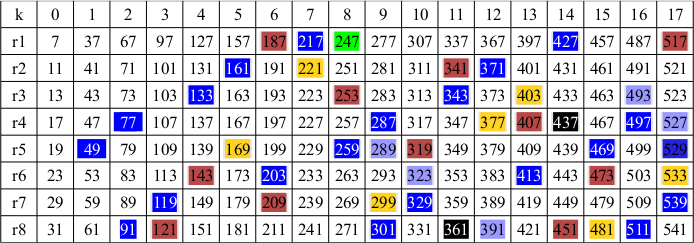

Sieve of Zakiya
In mathematics, the sieve of Zakiya (Swahili) is a modern efficient algorithm for finding all prime numbers up to a specified integer by performing a common sieve over a family of prime generators. It was created in 2008 by Jabari Zakiya[1] [2] , an American computer programmer, mathematician, and former NASA electrical engineer.
Contents[hide] |
[edit] Algorithm
To find all the primes ≤ N
- choose a Prime Generator (PG), which has the form: Pn = mod*k+(1,ri)
- create list of prime candidates ≤ N of form: prime candidates = [mod*k+(r1,mod+1)], where k = 0,1.. represents a residue group of prime candidate values
- set prime = first prime candidate (pc)
- set primestep = prime*mod
- perform sieve with prime value (can be done sequentially or in parallel):
-
-
- multiply prime by each pc value of the residue group it belongs to
- mark each of these product values in pc list as non-prime
- from each product value, successively add primetep and mark values as non-prime, until end of list
-
- 6. set prime to next unmarked pc value in list and repeat from 4 while prime ≤ N1/2
[edit] Example
Illustration of Sieve of Zakiya for P5(541) 
{kind=link}
Find the primes up to N = 541 (100th prime)
1. choose prime generator P5 = 30*k+(1,7,11,13,17,19,23,29)
2. create prime candidates list of form: [30*k+(7,11,13,17,19,23,29,31)], k = 0,1,2..17
- prime candidates rows are: r1 = 30*k+7, r2 = 30*k+11, ... r7 = 30*k+29, r8 = 30*k+31
- where each column is a residue group of prime candidates for k = 0,1,2..17
3. set prime = 7 (first pc value)
4. set primestep = prime*mod = 7*30 = 210
5. perform sieve with prime = 7 (can be done sequentially or in parallel):
- multiply prime by each member of its residue group
- for prime = 7: 7*[7,11,13,17,19,23,29,31] => [49,77,91,119,133,161,203,217]
- starting at these values, successively add primestep=210 and mark values as non-prime, until end of list
6. repeat from 4 with successive unmarked candidates (11,13..23) as primes ≤ (5411/2 = 23)
Each color in the prime candidates list represents the non-primes eliminated by the sieve primes, starting with 7 (blue), 11 (red), etc. For 7, [49,77,91,119,133,161,203,217] are the starting values in a row, then 210 (primestep) is successively added to mark additional non-primes in these rows.
An easier equivalent way to do this is to mark each primeth column to the right of the starting location as non-prime for a given prime (color). Thus for 7 (blue), mark each 7th column to the right of the starting locations [49,77,91,119,133,161,203,217] as blue for those rows, then repeat for each successive prime, 11 (red), etc.
The primes are the 97 unmarked members in the list plus the 3 primes pj < (r1=7), 2,3,5.
[edit] Implementation of Algorithm
Code Examples
There are three components to a software implementation.
- parameter initialization
- sieve process
- prime values extraction
The following code examples show instructional reference implementations where the sieve process is done sequentially. However, modern hardware with multiple independent cores/threads can be used with software to perform the sieve process in parallel to significantly increase performance.
[edit] Python
import psyco; psyco.full() # comment out line if psyco lib not available/wanted
from math import sqrt, ceil
def SoZP5(val):
# all prime candidates > 5 are of form 30*k+(1,7,11,13,17,19,23,29)
residues = [1,7,11,13,17,19,23,29,31]
num = val-1 | 1 # if val even number then subtract 1
mod=30; rescnt=8 # modulus value; number of residues
k=num/mod; modk = mod*k; r=1 # kth residue group, base num value
while num >= modk+residues[r]: r +=1 # find last pc position <= num
maxprms = k*rescnt + r-1 # max number of prime candidates
prms = [True]*maxprms # set all prime candidates to True
# hash of residues offsets to compute nonprimes positions in prms
pos = {}
for i in xrange(rescnt): pos[residues[i]] = i-1
# sieve to eliminate nonprimes from prms
sqrtN = int(ceil(sqrt(num)))
modk=r=0
for prm in prms:
r += 1
if r > rescnt: r = 1; modk += mod
if not prm: continue
prime = modk + residues[r]
if prime > sqrtN: break
prmstep = prime*rescnt
for ri in residues[1:]:
product = prime*(modk+ri)
# compute product position index in prms
k,rr = divmod(product,mod)
nonprmpos = k*rescnt + pos[rr]
for nprm in xrange(nonprmpos,maxprms,prmstep): prms[nprm] = False
# the prms array now has all the positions for primes 7..N
primes = [2,3,5]
if num < 7: return primes[:1+num//2]
modk=r=0
for prime in prms:
r += 1
if r > rescnt: r = 1; modk += mod
if prime: primes.append(modk+residues[r])
return primes
[edit] Ruby
This example extends the Ruby class Integer to include the method sozP5, to use as follows:
primes541 = 541.sozP5 primes541.size => 100 primes541.last => 541 primes541[99] => 541 primes541[0] => 2
class Integer
def sozP5
# all prime candidates > 5 are of form 30*k+(1,7,11,13,17,19,23,29)
residues = [1,7,11,13,17,19,23,29,31]
num = self-1 | 1 # if N even number then subtract 1
mod=30; rescnt=8 # modulus value; number of residues
k=num/mod; modk = k*mod; r=1 # kth residue group, base num value
while num >= modk+residues[r]; r +=1 end # find last pc position <= num
maxprms = k*rescnt + r-1 # max number of prime candidates
prms=Array.new(maxprms,true) # set all prime candidates to True
# hash of residues offsets to compute nonprimes positions in prms
pos={}; rescnt.times {|i| pos[residues[i]] = i-1}
# sieve to eliminate nonprimes from prms
sqrtN = Math.sqrt(num).to_i
modk,r=0,0
prms.each do |prm|
if r < rescnt; r +=1 else r=1; modk += mod end
next unless prm
prime = modk + residues[r]
break if prime > sqrtN
prmstep = prime*rescnt
residues[1..-1].each do |ri|
product = prime*(modk+ri)
# compute product position index in prms
k,rr = product.divmod mod
nonprmpos = k*rescnt + pos[rr]
while nonprmpos < maxprms; prms[nonprmpos]=nil; nonprmpos += prmstep end
end
end
# the prms array now has all the positions for primes 7..N
primes = [2,3,5]
return primes[0..num/2] if num < 7
modk,r=0,0
prms.each do |prime|
if r < rescnt; r +=1 else r=1; modk += mod end
primes << modk+residues[r] if prime
end
primes
end
end
[edit] C++
C++ is a compiled language which performs much faster than the dynamic languages Ruby and Python. This version uses the P11 generator to better show the SoZ's performance potential. It takes an input integer N and outputs the time it takes to perform variable/array initialization, the SoZ sieve process, the primes extraction process, and the total elapsed time. It can be used to time the performance of different generators by changing the PG parameters at the beginning of the routine, and the appropriate changes to the primes array for the primes extraction process.
#include <stdio.h>
#include <string.h>
#include <math.h>
#include <malloc.h>
#include <sys/time.h>
#define USECS 1000000.0 // per sec
double currtime()
{
struct timeval tv;
gettimeofday(&tv, NULL);
return( (double) (tv.tv_sec*USECS + tv.tv_usec) );
}
int main()
{
// init modulus, rescnt, and residues array for P11 prime generator
#define np 5 // np is initial primes count
#define gen 11 // output designator
#define mod 2310 // modulus value
#define rescnt 480 // number of residues
// for P11 all prime candidates > 11 are of form 2310*k+(1,res[13:2309])
unsigned int residues[481]= {
1,13,17,19,23,29,31,37,41,43,47,53,59,61,67,71,73,79,83,89,
97,101,103,107,109,113,127,131,137,139,149,151,157,163,167,169,173,
179,181,191,193,197,199,211,221,223,227,229,233,239,241,247,251,257,
263,269,271,277,281,283,289,293,299,307,311,313,317,323,331,337,347,
349,353,359,361,367,373,377,379,383,389,391,397,401,403,409,419,421,
431,433,437,439,443,449,457,461,463,467,479,481,487,491,493,499,503,
509,521,523,527,529,533,541,547,551,557,559,563,569,571,577,587,589,
593,599,601,607,611,613,617,619,629,631,641,643,647,653,659,661,667,
673,677,683,689,691,697,701,703,709,713,719,727,731,733,739,743,751,
757,761,767,769,773,779,787,793,797,799,809,811,817,821,823,827,829,
839,841,851,853,857,859,863,871,877,881,883,887,893,899,901,907,911,
919,923,929,937,941,943,947,949,953,961,967,971,977,983,989,991,997,
1003,1007,1009,1013,1019,1021,1027,1031,1033,1037,1039,1049,1051,1061,
1063,1069,1073,1079,1081,1087,1091,1093,1097,1103,1109,1117,1121,1123,
1129,1139,1147,1151,1153,1157,1159,1163,1171,1181,1187,1189,1193,1201,
1207,1213,1217,1219,1223,1229,1231,1237,1241,1247,1249,1259,1261,1271,
1273,1277,1279,1283,1289,1291,1297,1301,1303,1307,1313,1319,1321,1327,
1333,1339,1343,1349,1357,1361,1363,1367,1369,1373,1381,1387,1391,1399,
1403,1409,1411,1417,1423,1427,1429,1433,1439,1447,1451,1453,1457,1459,
1469,1471,1481,1483,1487,1489,1493,1499,1501,1511,1513,1517,1523,1531,
1537,1541,1543,1549,1553,1559,1567,1571,1577,1579,1583,1591,1597,1601,
1607,1609,1613,1619,1621,1627,1633,1637,1643,1649,1651,1657,1663,1667,
1669,1679,1681,1691,1693,1697,1699,1703,1709,1711,1717,1721,1723,1733,
1739,1741,1747,1751,1753,1759,1763,1769,1777,1781,1783,1787,1789,1801,
1807,1811,1817,1819,1823,1829,1831,1843,1847,1849,1853,1861,1867,1871,
1873,1877,1879,1889,1891,1901,1907,1909,1913,1919,1921,1927,1931,1933,
1937,1943,1949,1951,1957,1961,1963,1973,1979,1987,1993,1997,1999,2003,
2011,2017,2021,2027,2029,2033,2039,2041,2047,2053,2059,2063,2069,2071,
2077,2081,2083,2087,2089,2099,2111,2113,2117,2119,2129,2131,2137,2141,
2143,2147,2153,2159,2161,2171,2173,2179,2183,2197,2201,2203,2207,2209,
2213,2221,2227,2231,2237,2239,2243,2249,2251,2257,2263,2267,2269,2273,
2279,2281,2287,2291,2293,2297,2309,2311};
unsigned int i,k,n,r,rr,ri,num,val,modk,maxprms,*primes;
unsigned long long prmstep, product, prime, nonprmpos;
char *sp, *prms, string[24];
// hash of residues offsets to compute nonprimes positions in prms
int pos[mod]; for (i=0; i<rescnt; i++) { pos[residues[i]] = i-1; };
printf( "Enter number N : ");
sp = gets(string);
sscanf(string, "%u", &val);
printf("Initialize variables and arrays. \n");
double start_time = currtime(); // begin timing total process
num = (val-1) | 1; // if value even number then subtract 1
k=num/mod; modk = mod*k; r=1; // kth residue group, base num value
while (num >= modk+residues[r]){r += 1;} // find last pc index <= num
maxprms = k*rescnt + r-1; // maximum number of prime candidates
prms = (char *) malloc(sizeof(char) * maxprms); // array of prime candidates
for (i=0; i < maxprms; i++) prms[i]=1; // set all prime candidates to True
unsigned int sqrtN = sqrt(num);
modk=0; r=0;
// sieve to eliminate nonprimes from prms
printf("Perform sieve on prime candidates. \n");
double soz_start = currtime(); // begin timing sieve process
for (i=0; i < maxprms; i++){
if (r < rescnt) r++; else { r=1; modk += mod;}
if (!prms[i]) continue;
prime = modk + residues[r];
if (prime > sqrtN) break;
prmstep = prime*rescnt;
for (ri=1; ri < (rescnt+1); ri++){
product = prime*(modk+residues[ri]);
// compute product position index in prms
k = product/mod; rr = product % mod;
nonprmpos = k*rescnt + pos[rr];
while (nonprmpos < maxprms){prms[nonprmpos]=0; nonprmpos += prmstep;}
}
}
double soz_end = currtime(); // end timing sieve process
// the prms array now has all the positions for primes 13..N
// approximate primes array size; make greater than N/ln(N)
double max = (double) ((num/log( (double) num) * 1.13)+8);
primes = (unsigned int *) malloc(sizeof(unsigned int) * (unsigned int) max);
printf("Allocated size for primes = %d\n", (unsigned int) max);
primes[0]=n=np; // primes[0] holds number of primes up to N
primes[1]=2; primes[2]=3; primes[3]=5; primes[4]=7; primes[5]=11;
if (num < 9) {n=1+num/2;}
else if (num < 11) {n=4;}
else if (num < 13) {n=5;}
else {
// extract prime numbers and count from prms into primes array
modk=0; r=0; n++; // n is next prime count past initial primes
for (i=0; i < maxprms; i++){
if (r < rescnt) r++; else {r=1; modk += mod;}
if (prms[i]) {primes[n] = modk+residues[r]; n++;}
}
primes[0]=n--; // store primes count
}
double end_time = currtime(); // end timing primes extraction and routine
printf("Init time (P%u) = %.3lf\n", gen, (soz_start-start_time)/USECS);
printf("Sieve time (P%u) = %.3lf\n", gen, (soz_end-soz_start)/USECS);
printf("Primes time (P%u) = %.3lf\n", gen, (end_time-soz_end)/USECS);
printf("Elapsed time (P%u) = %.3lf\n", gen, (end_time-start_time)/USECS);
printf("Last prime (of %u) = %u\n", n, primes[n]);
return (primes[n]);
} // end of main
[edit] Mathematical Foundations
[edit] Nomenclature
- Prime Generator (PG) Types - Strictly Prime (SP); Non-Prime (NP)
- Pn - a prime generator (PG), where n is a prime number (SP) or modulus value (NP or SP)
- pn denotes the order of a generator, i.e. it generates primes > n
- mod - modulus value, an even positive integer
- ri - family of residue values, odd integers
- rescnt - total number of residues for a PG
- k - the residue group value, an integer, 0,1,2,..
- modular compliment (mc) pairs (mcp) - two residues whose sum is mod, i.e. mod = ri + rj
- Modular Compliment Forms
-
- a prime ri is the mc to another prime rj or 1
- a non-prime ri is the mc to a prime rj or 1
- a non-prime ri is the mc to a non-prime rj
- PG Groups
-
- PG contain Form 1 mc only
- PG contain Form 1 and 2 mc
- PG contain Form 1, 2, and 3 mc
[edit] Prime Generator Properties
- For SP PG Pn, the order pn=n
- For NP PG, the order pn is the first prime < r1
- All primes > pn have the form Pn = mod*k+(1,ri)
- All primes N > pn thus must satisfy (N % mod) ε {1,ri}
- The ri contain all the primes between (pn, mod)
- For ri residue values, r0=1, r1 is always prime, rlast=mod-1
- For all ri>0, pn < ri < mod
- For all PG, ∑ ri = mod*rescnt/2
- SP PG moduli have the form p!(n) = p1*p2*p3*...pn
- Example: for P11, mod = p!(11) = 2*3*5*7*11 = 2310
- For SP PGs the total number of residues are: rescnt = #{1,ri} = ∏(pi-1).
- Example: for P11, rescnt = #{1,ri} = ∏(pi-1) =(2-1)(3-1)(5-1)(7-1)(11-1) = 1*2*4*6*10 = 480
[edit] How Prime Generators Work
All integers can be represented by some generator of form m*k+r, where r ε {0,1,2.. m-1}, k ≥ 0, which is a cyclic generator of modulo m with residues ri. The general form can be modified to be more selective to identify a reduced number space of only possible prime candidates.
The first value of m which can generate all the integers is 6.
The first integer generator is thus: 6*k+r, where r ε {0,1,2,3,4,5}, k ≥ 0.
To create a prime generator, eliminate the ri which produce only non-primes.
- r=0: 6k+0 is divisible by 6, non-primes.
- r=1: 6k+1 has no immediate factors, prime candidates.
- r=2: 6k+2 = 2 x (3k+1), non-primes.
- r=3: 6k+3 = 3 x (2k+1), non-primes.
- r=4: 6k+4 = 2 x (3k+2), non-primes.
- r=5: 6k+5 has no immediate factors, prime candidates.
Thus, only residues r=1 or r=5 can generate primes, i.e. r ε {1,5}. Because m=6, and r ε {1,5}, the first prime this generator can produce is 5, thus:
P6 = 6k+(1,5) (also 6k±1) is the first prime generator, which can generate all primes > 3.
Because m = 6 = 2*3 is the product of the first two primes, this is also the first strictly prime (SP) generator P3.
The next possible value is m=8 (m cannot be odd), which from the process shown produces the generator P8 = 8k+(1,3,5,7), pn=2. While this is a valid generator it is less "efficient" than P3|6 (see Generator Efficiency) and would normally not be used.
In general, there are an infinite number of possible generators (values of m), though some are more "efficient" than others. Specifically, SP are more efficient than non-prime (NP) generators.
[edit] Primality Testing
[edit] Primality Test Proof
Any SoZ PG can be used to create a deterministic primality tester, i.e. any integer N can be determined to be prime, or non-prime, with 100% certainty. This is an advantage over probabilistic primality testers, such as Miller-Rabin.
An integer N is prime if all primes pi ≤ sqrt(N) are coprime to N, i.e. if (N % pi) != 0 for all pi.
For the SoZ generators, primes candidates have form: pj=mod*k+(r1,mod+1).
The non-primes have form: nj,i=pj*[mod*k+(r1,mod+1)], for prime candidates pj and all ri.
Thus, if N is a non-prime nj,i: N=pj*mod*k+pj*ri and (N-pj*ri)=(pj*mod)*k.
Thus, if (N-pj*ri) is a multiple (by some k) of (pj*mod) then N is non-prime.
Thus, if (N-pj*ri) % (pj*mod) = 0 then N is non-prime, or prime if not.
[edit] Algorithm
To test if N is prime
- choose a Prime Generator (PG), which has the form: Pn = mod*k+(1,ri)
- return true if N is a default initial prime
- return false if N not of the form Pn = mod*k+(1,ri) OR N=1 OR N%5=0
- set pj to first appropriate prime ri
- perform tests (N-pj*ri) % (pj*mod) = 0: (can be done sequentially or in parallel):
-
-
- set mi=pj*mod and ni=pj*ri for all ri
- return false if any (N-ni)%mi = 0
- set pj to next pc value and repeat 4 while pc ≤ sqrt(N)
-
- 5. return true if all test in 4 are false
[edit] Examples
The easiest PG to use is P3 = 6k+(1,5), where mod=6, and ri=[5,7].
Prime test for N=119
- return true if N is 2, 3, or 5
- return false if N is not form 6k+(1,5) OR N=1 OR N%5=0
- 119 passes first 2 tests, set pj=7
- sqrt(119) = 10, only need to do test 4 for pc ≤ 10
-
- set m=6*7=42, n1=5*7=35, n2=7*7=49
- (119-35)=84 and (119-49)=70; 84%42=0 and 70%42=28
- return false because (N-n1)%m=0
119 not prime because (119-35)=84=42*2 is a multiple of mod*pj=6*7=42, thus:
119=35+84=35+(42*2)=(7*5)+(7*6*2)=7*(5+12)=7*17
Prime test for N=113
- return true if N is 2, 3, or 5
- return false if N is not form 6k+(1,5) OR N=1 OR N%5=0
- 113 passes first 2 tests, set pj=7
- sqrt(113) = 10, only need to do test 4 for pc ≤ 10
-
- set m=6*7=42, n1=5*7=35, n2=7*7=49
- (113-35)=78 and (113-49)=64; 78%42=36 and 64%42=22
- set next pj=11, since neither (N-n1)%m or (N-n2)%n is 0
- 5. return true because pj > sqrt(113)
113 is prime
[edit] Implementation
The following Ruby code creates prime? as a class Integer method. It uses P3 and a sequential implementation. Performance can be increased by performing the (N-ri*nj)%(mod*nj) operations for each ri in parallel.
The code can be modified to use as the basis of a routine to fully factor all integers of form Pn.
944413913381.prime? => "prime" 944413913383.prime? => "not prime: divisible by 15149" 944413913409.prime? => "not prime: N != 6*k+(1,5)"
class Integer
def prime?
n = self.abs
return “prime” if [2, 3, 5].include? n
return 'not prime: N divisible by 5' if n%5 == 0
return 'not prime: N != 6*k+(1,5)' if ( ! [1, 5].include?(n%6) || n == 1 )
sqrtN = Math.sqrt(n).to_i
p1, p2 = 7, 11 # first prime candidates pj
while p1 <= sqrtN
# n not prime if (n-ri*pj)%(mod*pj)=0; for P3, mod=6 and ri=[5,7]
# si= 5*pj, mi = 6*pj, ti = 7*pj
s1 = 5*p1; m1 = s1+p1; t1 = m1+p1
return "not prime: divisible by #{p1}" if (n-s1)%m1 == 0 || (n-t1)%m1 == 0
s2 = 5*p2; m2 = s2+p2; t2 = m2+p2
return "not prime: divisible by #{p2}" if (n-s2)%m2 == 0 || (n-t2)%m2 == 0
p1 += 6; p2 += 6 # next prime candidates
end
return “prime”
end
end
Psuedo code to make any generator a primality tester.
for PG = mod*k+(1,ri),
residues = [r1:mod+1] and rescnt = number of residues
modk,r= 0,0; pj=r1 # first prime candidate pj
while pj <= sqrtN
# n not prime if (n-ri*pj)%(mod*pj) = 0
m = mod*pj
residues.each do |ri|
s = ri*pj # test for all ri*pj
return "not prime: divisible by #{pj}" if (n-s)%m == 0
end
if r < rescnt-1; r +=1 else r=0; modk +=mod end
pj = modk+residues[r] # next prime candidate
end
return "prime"
[edit] Sieve of Zakiya (SoZ) Generators
[edit] Table of Characteristics
| Prime Generators | Type | Group | Modulus | Residues | Primes | Form 2 mc | Form 3 mc |
|---|---|---|---|---|---|---|---|
| P3 | SP | 1 | 6 | 2 | 1 | 0 | 0 |
| P5 | SP | 1 | 30 | 8 | 7 | 0 | 0 |
| P7 | SP | 2 | 210 | 48 | 42 | 5 | 0 |
| P11 | SP | 3 | 2310 | 480 | 338 | 111 | 30 |
| P13 | SP | 3 | 30030 | 5760 | 3242 | 1431 | 1086 |
| P17* | SP | 3 | 510510 | 92160 | 42324 | 23339 | 26496 |
| P60 | NP | 2 | 60 | 16 | 14 | 1 | 0 |
| P110 | NP | 2 | 110 | 42 | 28 | 13 | 0 |
| P150 | NP | 2 | 150 | 40 | 32 | 7 | 0 |
| P180 | NP | 2 | 180 | 48 | 38 | 9 | 0 |
* Not shown in List
[edit] Generator Efficiency
A generator's algorithmic "efficiency" is a rating to denote how well one generator can find primes versus another. It is determined by the ratio of a PG's modulus (mod) to residue count (rescnt).
The ratio rescnt/mod denotes the percentage of the integers upto N that will be prime candidates. As this ratio becomes smaller fewer primes candidates need to be generated and searched through to find all the primes. The efficiency rating ef(Pn)=ln(mod/res) expresses how "efficient" one generator is to another, with higher values denoting better algorithmic efficiency.
Thus as shown, P5, P60, P150 and P180 (and P90 and P120 not shown), which have moduli that are multiples or 30, have the same efficiency, and (all things being equal) will perform the same. However since P5|30 uses fewer residues it would normally be the preferred one to implement.
Conversely, while P7 has the next multiple of 30 modulus (210) after P180 they both have the same rescnt. So P7|210 uses fewer prime candidates to search through, and thus has a higher efficiency rating. P7 is an SP generator, which all show this jump in efficiency and are relatively most efficient.
| Pn | P3 | P5 | P60 | P110 | P150 | P180 | P7 | P11 | P13 | P17 |
|---|---|---|---|---|---|---|---|---|---|---|
| modulus | 6 | 30 | 60 | 110 | 150 | 180 | 210 | 2310 | 30030 | 510510 |
| residues | 2 | 8 | 16 | 42 | 40 | 48 | 48 | 480 | 5760 | 92160 |
| pc % of N | 33.33 | 26.67 | 26.67 | 38.18 | 26.67 | 26.67 | 22.86 | 20.78 | 19.18 | 18.05 |
| ef(Pn)=ln(mod/res) | 1.099 | 1.322 | 1.322 | 0.963 | 1.322 | 1.322 | 1.476 | 1.571 | 1.651 | 1.712 |
[edit] Generator Performance
Typical results of reference sequential C++ implementations of P3,P5,P7,P11,P13 run on 32-bit 2.6.38.8 Linux kernel laptop with Intel I5-2410M 2.3GHz (64-bit 4 cores) cpu, with g++ 4.5.2.
N = 4,294,967,291 is largest prime within 32-bits: (2**32)-1 = 4,294,967,293
Π(4,294,967,291) = 203,280,221 primes
| N=4,294,967,291 | P3 | P5 | P7 | P11 | P13 |
|---|---|---|---|---|---|
| Init | 6.1 | 4.9 | 4.2 | 3.8 | 3.5 |
| Sieve | 32.1 | 30.3 | 25.1 | 21.4 | 19.6 |
| Primes | 7.9 | 7.2 | 6.7 | 6.5 | 6.1 |
| Total Time (secs) | 46.1 | 42.4 | 36.0 | 31.7 | 29.2 |
[edit] List of Some SoZ Generators
P3 = 6*k+(1,5)
P5 = 30*k+ (1, 7, 11, 13, 17, 19, 23, 29)
P60 = 60*k+(1, 7, 11, 13, 17, 19, 23, 29, 31, 37, 41, 43, 47, 49, 53, 59)
P110 = 110*k+(1, 3, 7, 9, 11, 13, 17, 19, 21, 23, 27, 29, 31, 37, 39, 41, 43, 47, 49, 51, 53, 57, 59, 61, 63, 67, 69, 71, 73, 79, 81, 83, 87, 89, 91, 93, 97, 99, 101, 103, 107, 109)
P150 = 150*k+(1, 7, 11, 13, 17, 19, 23, 29, 31, 37, 41, 43, 47, 49, 53, 59, 61, 67, 71, 73, 77, 79, 83, 89, 91, 97, 101, 103, 107, 109, 113, 119, 121, 127, 131, 133, 137, 139, 143, 149)
P180 = 180*k+(1,7, 11, 13, 17, 19, 23, 29, 31, 37, 41, 43, 47, 49, 53, 59, 61, 67, 71, 73, 77, 79, 83, 89, 91, 97, 101, 103, 107, 109, 113, 119, 121, 127, 131, 133, 137, 139, 143, 149, 151, 157, 161, 163, 167, 169, 173, 179)
P7 = 210*k+(1, 11, 13, 17, 19, 23, 29, 31, 37, 41, 43, 47, 53, 59, 61, 67, 71, 73, 79, 83, 89, 97, 101, 103, 107, 109, 113, 121, 127, 131, 137, 139, 143, 149, 151, 157, 163, 167, 169, 173, 179, 181, 187, 191, 193, 197, 199, 209)
P11 = 2310*k+(1, 13, 17, 19, 23, 29, 31, 37, 41, 43, 47, 53, 59, 61, 67, 71, 73, 79, 83, 89, 97, 101, 103, 107, 109, 113, 127, 131, 137, 139, 149, 151, 157, 163, 167, 169, 173, 179, 181, 191, 193, 197, 199, 211, 221, 223, 227, 229, 233, 239, 241, 247, 251, 257, 263, 269, 271, 277, 281, 283, 289, 293, 299, 307, 311, 313, 317, 323, 331, 337, 347, 349, 353, 359, 361, 367, 373, 377, 379, 383, 389, 391, 397, 401, 403, 409, 419, 421, 431, 433, 437, 439, 443, 449, 457, 461, 463, 467, 479, 481, 487, 491, 493, 499, 503, 509, 521, 523, 527, 529, 533, 541, 547, 551, 557, 559, 563, 569, 571, 577, 587, 589, 593, 599, 601, 607, 611, 613, 617, 619, 629, 631, 641, 643, 647, 653, 659, 661, 667, 673, 677, 683, 689, 691, 697, 701, 703, 709, 713, 719, 727, 731, 733, 739, 743, 751, 757, 761, 767, 769, 773, 779, 787, 793, 797, 799, 809, 811, 817, 821, 823, 827, 829, 839, 841, 851, 853, 857, 859, 863, 871, 877, 881, 883, 887, 893, 899, 901, 907, 911, 919, 923, 929, 937, 941, 943, 947, 949, 953, 961, 967, 971, 977, 983, 989, 991, 997, 1003, 1007, 1009, 1013, 1019, 1021, 1027, 1031, 1033, 1037, 1039, 1049, 1051, 1061, 1063, 1069, 1073, 1079, 1081, 1087, 1091, 1093, 1097, 1103, 1109, 1117, 1121, 1123, 1129, 1139, 1147, 1151, 1153, 1157, 1159, 1163, 1171, 1181, 1187, 1189, 1193, 1201, 1207, 1213, 1217, 1219, 1223, 1229, 1231, 1237, 1241, 1247, 1249, 1259, 1261, 1271, 1273, 1277, 1279, 1283, 1289, 1291, 1297, 1301, 1303, 1307, 1313, 1319, 1321, 1327, 1333, 1339, 1343, 1349, 1357, 1361, 1363, 1367, 1369, 1373, 1381, 1387, 1391, 1399, 1403, 1409, 1411, 1417, 1423, 1427, 1429, 1433, 1439, 1447, 1451, 1453, 1457, 1459, 1469, 1471, 1481, 1483, 1487, 1489, 1493, 1499, 1501, 1511, 1513, 1517, 1523, 1531, 1537, 1541, 1543, 1549, 1553, 1559, 1567, 1571, 1577, 1579, 1583, 1591, 1597, 1601, 1607, 1609, 1613, 1619, 1621, 1627, 1633, 1637, 1643, 1649, 1651, 1657, 1663, 1667, 1669, 1679, 1681, 1691, 1693, 1697, 1699, 1703, 1709, 1711, 1717, 1721, 1723, 1733, 1739, 1741, 1747, 1751, 1753, 1759, 1763, 1769, 1777, 1781, 1783, 1787, 1789, 1801, 1807, 1811, 1817, 1819, 1823, 1829, 1831, 1843, 1847, 1849, 1853, 1861, 1867, 1871, 1873, 1877, 1879, 1889, 1891, 1901, 1907, 1909, 1913, 1919, 1921, 1927, 1931, 1933, 1937, 1943, 1949, 1951, 1957, 1961, 1963, 1973, 1979, 1987, 1993, 1997, 1999, 2003, 2011, 2017, 2021, 2027, 2029, 2033, 2039, 2041, 2047, 2053, 2059, 2063, 2069, 2071, 2077, 2081, 2083, 2087, 2089, 2099, 2111, 2113, 2117, 2119, 2129, 2131, 2137, 2141, 2143, 2147, 2153, 2159, 2161, 2171, 2173, 2179, 2183, 2197, 2201, 2203, 2207, 2209, 2213, 2221, 2227, 2231, 2237, 2239, 2243, 2249, 2251, 2257, 2263, 2267, 2269, 2273, 2279, 2281, 2287, 2291, 2293, 2297, 2309)
P13 = 30030*k+(1, 17, 19, 23, 29, 31, 37, 41, 43, 47, 53, 59, 61, 67, 71, 73, 79, 83, 89, 97, 101, 103, 107, 109, 113, 127, 131, 137, 139, 149, 151, 157, 163, 167, 173, 179, 181, 191, 193, 197, 199, 211, 223, 227, 229, 233, 239, 241, 251, 257, 263, 269, 271, 277, 281, 283, 289, 293, 307, 311, 313, 317, 323, 331, 337, 347, 349, 353, 359, 361, 367, 373, 379, 383, 389, 391, 397, 401, 409, 419, 421, 431, 433, 437, 439, 443, 449, 457, 461, 463, 467, 479, 487, 491, 493, 499, 503, 509, 521, 523, 527, 529, 541, 547, 551, 557, 563, 569, 571, 577, 587, 589, 593, 599, 601, 607, 613, 617, 619, 629, 631, 641, 643, 647, 653, 659, 661, 667, 673, 677, 683, 691, 697, 701, 703, 709, 713, 719, 727, 731, 733, 739, 743, 751, 757, 761, 769, 773, 779, 787, 797, 799, 809, 811, 817, 821, 823, 827, 829, 839, 841, 851, 853, 857, 859, 863, 877, 881, 883, 887, 893, 899, 901, 907, 911, 919, 929, 937, 941, 943, 947, 953, 961, 967, 971, 977, 983, 989, 991, 997, 1003, 1007, 1009, 1013, 1019, 1021, 1031, 1033, 1037, 1039, 1049, 1051, 1061, 1063, 1069, 1073, 1081, 1087, 1091, 1093, 1097, 1103, 1109, 1117, 1121, 1123, 1129, 1139, 1147, 1151, 1153, 1159, 1163, 1171, 1181, 1187, 1189, 1193, 1201, 1207, 1213, 1217, 1219, 1223, 1229, 1231, 1237, 1241, 1247, 1249, 1259, 1271, 1273, 1277, 1279, 1283, 1289, 1291, 1297, 1301, 1303, 1307, 1319, 1321, 1327, 1333, 1343, 1349, 1357, 1361, 1363, 1367, 1369, 1373, 1381, 1387, 1399, 1403, 1409, 1411, 1423, 1427, 1429, 1433, 1439, 1447, 1451, 1453, 1457, 1459, 1471, 1481, 1483, 1487, 1489, 1493, 1499, 1501, 1511, 1513, 1517, 1523, 1531, 1537, 1541, 1543, 1549, 1553, 1559, 1567, 1571, 1577, 1579, 1583, 1591, 1597, 1601, 1607, 1609, 1613, 1619, 1621, 1627, 1633, 1637, 1643, 1649, 1657, 1663, 1667, 1669, 1679, 1681, 1691, 1693, 1697, 1699, 1709, 1711, 1717, 1721, 1723, 1733, 1739, 1741, 1747, 1751, 1753, 1759, 1763, 1769, 1777, 1783, 1787, 1789, 1801, 1811, 1817, 1819, 1823, 1829, 1831, 1843, 1847, 1849, 1853, 1861, 1867, 1871, 1873, 1877, 1879, 1889, 1891, 1901, 1907, 1909, 1913, 1919, 1921, 1927, 1931, 1933, 1943, 1949, 1951, 1957, 1961, 1973, 1979, 1987, 1993, 1997, 1999, 2003, 2011, 2017, 2021, 2027, 2029, 2033, 2039, 2047, 2053, 2059, 2063, 2069, 2071, 2077, 2081, 2083, 2087, 2089, 2099, 2111, 2113, 2117, 2129, 2131, 2137, 2141, 2143, 2147, 2153, 2159, 2161, 2173, 2179, 2183, 2201, 2203, 2207, 2209, 2213, 2221, 2227, 2231, 2237, 2239, 2243, 2251, 2257, 2263, 2267, 2269, 2273, 2279, 2281, 2287, 2291, 2293, 2297, 2309, 2311, 2323, 2329, 2333, 2339, 2341, 2347, 2351, 2357, 2363, 2369, 2371, 2377, 2381, 2383, 2389, 2393, 2399, 2407, 2411, 2413, 2417, 2419, 2423, 2437, 2441, 2447, 2449, 2459, 2461, 2467, 2473, 2477, 2479, 2489, 2491, 2501, 2503, 2507, 2521, 2531, 2533, 2537, 2539, 2543, 2549, 2551, 2557, 2567, 2573, 2579, 2581, 2591, 2593, 2599, 2603, 2609, 2617, 2621, 2623, 2627, 2633, 2641, 2647, 2657, 2659, 2663, 2669, 2671, 2677, 2683, 2687, 2689, 2693, 2699, 2701, 2707, 2711, 2713, 2719, 2729, 2731, 2741, 2747, 2749, 2753, 2759, 2767, 2771, 2773, 2777, 2789, 2791, 2797, 2801, 2803, 2809, 2813, 2819, 2831, 2833, 2837, 2839, 2843, 2851, 2857, 2861, 2867, 2869, 2879, 2881, 2887, 2897, 2903, 2909, 2911, 2917, 2921, 2923, 2927, 2929, 2939, 2941, 2953, 2957, 2963, 2969, 2971, 2983, 2987, 2993, 2999, 3001, 3007, 3011, 3013, 3019, 3023, 3037, 3041, 3043, 3049, 3053, 3061, 3067, 3071, 3077, 3079, 3083, 3089, 3097, 3103, 3109, 3119, 3121, 3127, 3131, 3137, 3139, 3149, 3151, 3161, 3163, 3167, 3169, 3173, 3181, 3187, 3191, 3193, 3197, 3203, 3209, 3217, 3221, 3229, 3233, 3239, 3247, 3251, 3253, 3257, 3259, 3271, 3277, 3281, 3287, 3293, 3299, 3301, 3307, 3313, 3317, 3319, 3323, 3329, 3331, 3337, 3343, 3347, 3349, 3359, 3361, 3371, 3373, 3379, 3383, 3389, 3391, 3397, 3401, 3403, 3407, 3413, 3427, 3431, 3433, 3439, 3449, 3457, 3461, 3463, 3467, 3469, 3473, 3481, 3491, 3499, 3503, 3511, 3517, 3527, 3529, 3533, 3539, 3541, 3547, 3551, 3557, 3559, 3569, 3571, 3581, 3583, 3587, 3589, 3593, 3599, 3607, 3611, 3613, 3617, 3623, 3629, 3631, 3637, 3643, 3649, 3659, 3667, 3671, 3673, 3677, 3683, 3691, 3697, 3701, 3709, 3713, 3719, 3721, 3727, 3733, 3737, 3739, 3743, 3749, 3761, 3763, 3767, 3769, 3779, 3781, 3791, 3793, 3797, 3799, 3803, 3811, 3821, 3823, 3827, 3833, 3841, 3847, 3851, 3853, 3859, 3863, 3869, 3877, 3881, 3889, 3893, 3901, 3907, 3911, 3917, 3919, 3923, 3929, 3931, 3937, 3943, 3947, 3953, 3959, 3961, 3967, 3973, 3977, 3979, 3989, 4001, 4003, 4007, 4009, 4013, 4019, 4021, 4027, 4031, 4033, 4049, 4051, 4057, 4061, 4063, 4073, 4079, 4087, 4091, 4093, 4097, 4099, 4111, 4117, 4127, 4129, 4133, 4139, 4141, 4153, 4157, 4159, 4163, 4171, 4177, 4181, 4183, 4187, 4189, 4201, 4211, 4217, 4219, 4223, 4229, 4231, 4237, 4241, 4243, 4247, 4253, 4259, 4261, 4267, 4271, 4273, 4283, 4289, 4297, 4307, 4309, 4313, 4321, 4327, 4331, 4337, 4339, 4343, 4349, 4351, 4357, 4363, 4369, 4373, 4379, 4387, 4391, 4393, 4397, 4399, 4409, 4421, 4423, 4427, 4429, 4439, 4441, 4447, 4451, 4453, 4457, 4463, 4469, 4471, 4481, 4483, 4489, 4493, 4507, 4513, 4517, 4519, 4523, 4531, 4541, 4547, 4549, 4553, 4559, 4561, 4567, 4573, 4577, 4579, 4583, 4591, 4597, 4601, 4603, 4607, 4619, 4621, 4633, 4637, 4639, 4643, 4649, 4651, 4657, 4661, 4663, 4673, 4679, 4681, 4687, 4691, 4699, 4703, 4709, 4717, 4721, 4723, 4727, 4729, 4733, 4747, 4751, 4757, 4759, 4769, 4777, 4783, 4787, 4789, 4793, 4799, 4801, 4811, 4813, 4817, 4819, 4831, 4841, 4843, 4847, 4853, 4859, 4861, 4867, 4871, 4877, 4883, 4889, 4891, 4897, 4903, 4909, 4913, 4919, 4931, 4933, 4937, 4943, 4951, 4957, 4967, 4969, 4973, 4981, 4987, 4993, 4997, 4999, 5003, 5009, 5011, 5017, 5021, 5023, 5029, 5039, 5041, 5051, 5053, 5059, 5063, 5069, 5077, 5081, 5087, 5099, 5101, 5107, 5111, 5113, 5119, 5123, 5129, 5141, 5143, 5147, 5149, 5153, 5167, 5171, 5177, 5179, 5183, 5189, 5191, 5197, 5207, 5209, 5219, 5221, 5227, 5231, 5233, 5237, 5249, 5251, 5261, 5263, 5267, 5273, 5279, 5281, 5287, 5293, 5297, 5303, 5309, 5311, 5321, 5323, 5329, 5333, 5339, 5347, 5351, 5353, 5359, 5363, 5371, 5377, 5381, 5387, 5389, 5393, 5399, 5407, 5413, 5417, 5419, 5429, 5431, 5437, 5441, 5443, 5449, 5459, 5461, 5471, 5477, 5479, 5483, 5491, 5497, 5501, 5503, 5507, 5513, 5519, 5521, 5527, 5531, 5539, 5543, 5549, 5557, 5561, 5563, 5567, 5569, 5573, 5581, 5587, 5591, 5597, 5609, 5611, 5617, 5623, 5627, 5633, 5639, 5641, 5647, 5651, 5653, 5657, 5659, 5669, 5671, 5683, 5689, 5693, 5699, 5701, 5711, 5713, 5717, 5723, 5729, 5737, 5741, 5743, 5749, 5767, 5771, 5773, 5777, 5779, 5783, 5791, 5801, 5807, 5809, 5813, 5821, 5827, 5833, 5839, 5843, 5849, 5851, 5857, 5861, 5867, 5869, 5879, 5881, 5891, 5893, 5897, 5899, 5903, 5909, 5911, 5917, 5921, 5923, 5927, 5933, 5939, 5947, 5953, 5959, 5963, 5969, 5977, 5981, 5983, 5987, 5989, 6001, 6007, 6011, 6023, 6029, 6031, 6037, 6043, 6047, 6049, 6053, 6059, 6067, 6073, 6077, 6079, 6089, 6091, 6101, 6103, 6107, 6109, 6113, 6119, 6121, 6131, 6133, 6137, 6143, 6151, 6157, 6161, 6163, 6169, 6173, 6179, 6187, 6191, 6197, 6199, 6203, 6211, 6217, 6221, 6229, 6233, 6239, 6241, 6247, 6257, 6263, 6269, 6271, 6277, 6283, 6287, 6289, 6299, 6301, 6311, 6313, 6317, 6319, 6323, 6329, 6337, 6341, 6343, 6353, 6359, 6361, 6367, 6371, 6373, 6379, 6389, 6397, 6401, 6403, 6407, 6421, 6427, 6431, 6437, 6439, 6443, 6449, 6451, 6463, 6467, 6469, 6473, 6481, 6491, 6493, 6497, 6499, 6509, 6511, 6521, 6527, 6529, 6533, 6541, 6547, 6551, 6553, 6557, 6563, 6569, 6571, 6577, 6581, 6583, 6593, 6599, 6607, 6613, 6619, 6623, 6631, 6637, 6641, 6647, 6649, 6653, 6659, 6661, 6667, 6673, 6679, 6683, 6689, 6691, 6697, 6701, 6703, 6707, 6709, 6719, 6731, 6733, 6737, 6739, 6749, 6751, 6757, 6761, 6763, 6767, 6779, 6781, 6791, 6793, 6803, 6817, 6821, 6823, 6827, 6829, 6833, 6841, 6847, 6857, 6859, 6863, 6869, 6871, 6883, 6887, 6889, 6893, 6899, 6901, 6907, 6911, 6913, 6917, 6931, 6943, 6947, 6949, 6953, 6959, 6961, 6967, 6971, 6973, 6977, 6983, 6989, 6991, 6997, 7001, 7003, 7009, 7013, 7019, 7027, 7031, 7037, 7039, 7043, 7057, 7061, 7067, 7069, 7079, 7081, 7087, 7093, 7097, 7099, 7103, 7109, 7121, 7123, 7127, 7129, 7141, 7151, 7153, 7157, 7159, 7169, 7171, 7177, 7181, 7187, 7193, 7199, 7201, 7207, 7211, 7213, 7219, 7223, 7229, 7237, 7243, 7247, 7253, 7261, 7277, 7279, 7283, 7289, 7291, 7297, 7303, 7307, 7309, 7313, 7321, 7327, 7331, 7333, 7339, 7349, 7351, 7361, 7363, 7367, 7369, 7373, 7379, 7387, 7391, 7393, 7409, 7411, 7417, 7421, 7429, 7433, 7439, 7451, 7453, 7457, 7459, 7463, 7471, 7477, 7481, 7487, 7489, 7493, 7499, 7507, 7517, 7519, 7523, 7529, 7531, 7537, 7541, 7543, 7547, 7549, 7559, 7561, 7571, 7573, 7577, 7583, 7589, 7591, 7597, 7603, 7607, 7613, 7619, 7621, 7627, 7633, 7639, 7643, 7649, 7661, 7663, 7669, 7673, 7681, 7687, 7691, 7697, 7699, 7703, 7717, 7723, 7727, 7729, 7739, 7741, 7747, 7751, 7753, 7757, 7759, 7769, 7771, 7781, 7783, 7789, 7793, 7801, 7807, 7811, 7817, 7823, 7829, 7831, 7837, 7841, 7849, 7853, 7859, 7867, 7871, 7873, 7877, 7879, 7883, 7897, 7901, 7907, 7913, 7919, 7921, 7927, 7933, 7937, 7939, 7949, 7951, 7957, 7961, 7963, 7967, 7979, 7981, 7991, 7993, 7999, 8003, 8009, 8011, 8017, 8023, 8027, 8033, 8039, 8051, 8053, 8059, 8069, 8077, 8081, 8083, 8087, 8089, 8093, 8101, 8111, 8117, 8119, 8123, 8131, 8137, 8143, 8147, 8149, 8153, 8159, 8161, 8167, 8171, 8179, 8189, 8191, 8201, 8207, 8209, 8213, 8219, 8221, 8227, 8231, 8233, 8237, 8243, 8249, 8251, 8257, 8263, 8269, 8273, 8279, 8287, 8291, 8293, 8297, 8299, 8303, 8311, 8317, 8321, 8329, 8339, 8341, 8347, 8353, 8357, 8363, 8369, 8377, 8381, 8383, 8387, 8389, 8399, 8401, 8413, 8417, 8419, 8423, 8429, 8431, 8441, 8443, 8447, 8453, 8461, 8467, 8471, 8473, 8479, 8483, 8497, 8501, 8507, 8509, 8513, 8521, 8527, 8531, 8537, 8539, 8543, 8549, 8551, 8557, 8563, 8573, 8579, 8581, 8587, 8597, 8599, 8609, 8611, 8621, 8623, 8627, 8629, 8633, 8639, 8641, 8647, 8651, 8653, 8663, 8669, 8677, 8681, 8683, 8689, 8693, 8699, 8707, 8711, 8713, 8717, 8719, 8731, 8737, 8741, 8747, 8753, 8759, 8761, 8773, 8777, 8779, 8783, 8791, 8797, 8803, 8807, 8809, 8819, 8821, 8831, 8837, 8839, 8843, 8849, 8851, 8857, 8861, 8863, 8867, 8873, 8881, 8887, 8891, 8893, 8903, 8909, 8917, 8923, 8927, 8929, 8933, 8941, 8947, 8951, 8959, 8963, 8969, 8971, 8977, 8989, 8993, 8999, 9001, 9007, 9011, 9013, 9017, 9019, 9029, 9041, 9043, 9047, 9049, 9059, 9067, 9071, 9073, 9077, 9083, 9089, 9091, 9101, 9103, 9109, 9127, 9131, 9133, 9137, 9143, 9151, 9157, 9161, 9167, 9169, 9173, 9179, 9181, 9187, 9193, 9197, 9199, 9203, 9209, 9211, 9221, 9223, 9227, 9239, 9241, 9253, 9257, 9259, 9263, 9271, 9277, 9281, 9283, 9287, 9293, 9299, 9301, 9307, 9311, 9313, 9319, 9323, 9329, 9337, 9341, 9343, 9349, 9353, 9367, 9371, 9377, 9379, 9389, 9391, 9397, 9403, 9407, 9409, 9413, 9419, 9421, 9431, 9433, 9437, 9439, 9461, 9463, 9467, 9469, 9473, 9479, 9481, 9487, 9491, 9497, 9509, 9511, 9517, 9521, 9523, 9533, 9539, 9547, 9551, 9553, 9557, 9563, 9571, 9577, 9587, 9589, 9593, 9599, 9601, 9613, 9617, 9619, 9623, 9629, 9631, 9637, 9641, 9643, 9649, 9661, 9671, 9673, 9677, 9679, 9683, 9689, 9697, 9701, 9703, 9707, 9719, 9721, 9727, 9731, 9733, 9739, 9743, 9749, 9761, 9767, 9769, 9773, 9781, 9787, 9791, 9797, 9799, 9803, 9809, 9811, 9817, 9827, 9829, 9833, 9839, 9847, 9851, 9853, 9857, 9859, 9869, 9871, 9881, 9883, 9887, 9899, 9901, 9907, 9913, 9917, 9923, 9929, 9931, 9937, 9941, 9943, 9949, 9953, 9959, 9967, 9973, 9979, 9983, 9991, 10001, 10007, 10009, 10013, 10019, 10027, 10033, 10037, 10039, 10051, 10057, 10061, 10063, 10067, 10069, 10079, 10081, 10091, 10093, 10097, 10099, 10103, 10111, 10117, 10121, 10123, 10133, 10139, 10141, 10147, 10151, 10159, 10163, 10169, 10177, 10181, 10183, 10187, 10189, 10193, 10201, 10207, 10211, 10217, 10223, 10229, 10237, 10243, 10247, 10249, 10253, 10259, 10261, 10267, 10271, 10273, 10277, 10279, 10289, 10291, 10301, 10303, 10313, 10319, 10321, 10327, 10331, 10333, 10337, 10343, 10349, 10357, 10363, 10369, 10379, 10391, 10393, 10397, 10399, 10403, 10411, 10421, 10427, 10429, 10433, 10441, 10447, 10453, 10457, 10459, 10463, 10469, 10471, 10477, 10481, 10487, 10489, 10499, 10501, 10511, 10513, 10519, 10523, 10529, 10531, 10537, 10541, 10547, 10553, 10559, 10561, 10567, 10573, 10579, 10583, 10589, 10597, 10601, 10603, 10607, 10609, 10613, 10627, 10631, 10639, 10643, 10649, 10651, 10657, 10663, 10667, 10669, 10679, 10687, 10691, 10693, 10697, 10709, 10711, 10721, 10723, 10727, 10729, 10733, 10739, 10741, 10753, 10757, 10763, 10771, 10781, 10783, 10789, 10793, 10799, 10807, 10811, 10817, 10819, 10823, 10831, 10837, 10841, 10847, 10849, 10853, 10859, 10861, 10867, 10873, 10877, 10883, 10889, 10891, 10897, 10903, 10909, 10919, 10921, 10931, 10937, 10939, 10943, 10949, 10951, 10957, 10961, 10963, 10973, 10979, 10981, 10987, 10991, 10993, 10999, 11003, 11009, 11017, 11021, 11023, 11027, 11029, 11041, 11047, 11051, 11057, 11059, 11069, 11071, 11083, 11087, 11093, 11101, 11107, 11111, 11113, 11117, 11119, 11129, 11131, 11147, 11149, 11153, 11159, 11161, 11171, 11173, 11177, 11183, 11189, 11191, 11197, 11201, 11203, 11213, 11227, 11233, 11237, 11239, 11243, 11251, 11257, 11261, 11267, 11269, 11273, 11279, 11281, 11287, 11293, 11299, 11303, 11309, 11311, 11317, 11321, 11327, 11329, 11339, 11351, 11353, 11357, 11359, 11369, 11371, 11377, 11381, 11383, 11387, 11393, 11399, 11411, 11413, 11419, 11423, 11437, 11441, 11443, 11447, 11449, 11461, 11467, 11471, 11477, 11483, 11489, 11491, 11497, 11503, 11507, 11509, 11513, 11519, 11521, 11527, 11533, 11537, 11549, 11551, 11563, 11567, 11569, 11573, 11579, 11581, 11587, 11591, 11593, 11597, 11603, 11611, 11617, 11621, 11623, 11629, 11633, 11639, 11647, 11651, 11653, 11657, 11659, 11663, 11677, 11681, 11689, 11699, 11701, 11707, 11717, 11719, 11723, 11729, 11731, 11741, 11743, 11747, 11749, 11761, 11771, 11773, 11777, 11779, 11783, 11789, 11797, 11801, 11807, 11813, 11819, 11821, 11827, 11831, 11833, 11839, 11849, 11857, 11861, 11863, 11867, 11873, 11881, 11887, 11897, 11899, 11903, 11909, 11911, 11917, 11923, 11927, 11929, 11933, 11939, 11941, 11951, 11953, 11959, 11969, 11971, 11981, 11983, 11987, 11989, 11993, 12007, 12011, 12013, 12017, 12029, 12031, 12037, 12041, 12043, 12049, 12053, 12059, 12071, 12073, 12079, 12083, 12091, 12097, 12101, 12107, 12109, 12113, 12119, 12121, 12127, 12137, 12139, 12143, 12149, 12151, 12157, 12161, 12163, 12167, 12169, 12179, 12191, 12193, 12197, 12203, 12209, 12211, 12217, 12223, 12227, 12239, 12241, 12247, 12251, 12253, 12263, 12269, 12277, 12281, 12283, 12289, 12293, 12301, 12307, 12317, 12319, 12323, 12329, 12343, 12347, 12349, 12359, 12361, 12367, 12371, 12373, 12377, 12379, 12391, 12401, 12403, 12407, 12409, 12413, 12421, 12427, 12431, 12433, 12437, 12443, 12449, 12451, 12457, 12461, 12469, 12473, 12479, 12487, 12491, 12497, 12499, 12503, 12511, 12517, 12521, 12527, 12533, 12539, 12541, 12547, 12553, 12557, 12559, 12563, 12569, 12577, 12581, 12583, 12587, 12589, 12599, 12601, 12611, 12613, 12619, 12629, 12631, 12637, 12641, 12643, 12647, 12653, 12659, 12667, 12671, 12673, 12679, 12689, 12697, 12703, 12707, 12709, 12713, 12721, 12731, 12737, 12739, 12743, 12751, 12757, 12763, 12767, 12769, 12773, 12781, 12787, 12791, 12797, 12799, 12809, 12811, 12821, 12823, 12827, 12829, 12833, 12839, 12841, 12847, 12851, 12853, 12863, 12869, 12871, 12877, 12889, 12893, 12899, 12907, 12911, 12913, 12917, 12919, 12923, 12931, 12937, 12941, 12949, 12953, 12959, 12967, 12973, 12977, 12979, 12983, 12989, 12997, 13001, 13003, 13007, 13009, 13019, 13021, 13031, 13033, 13037, 13043, 13049, 13051, 13061, 13063, 13067, 13073, 13081, 13087, 13093, 13099, 13103, 13109, 13121, 13127, 13129, 13133, 13141, 13147, 13151, 13157, 13159, 13163, 13171, 13177, 13183, 13187, 13193, 13199, 13201, 13207, 13213, 13217, 13219, 13229, 13231, 13241, 13243, 13249, 13253, 13259, 13261, 13267, 13271, 13283, 13289, 13291, 13297, 13301, 13303, 13309, 13313, 13319, 13327, 13331, 13333, 13337, 13339, 13357, 13361, 13367, 13369, 13373, 13379, 13381, 13393, 13397, 13399, 13411, 13417, 13421, 13423, 13427, 13439, 13441, 13451, 13457, 13459, 13463, 13469, 13471, 13477, 13483, 13487, 13493, 13499, 13501, 13511, 13513, 13523, 13529, 13537, 13543, 13547, 13549, 13553, 13561, 13567, 13571, 13577, 13579, 13583, 13589, 13591, 13597, 13603, 13609, 13613, 13619, 13621, 13627, 13631, 13633, 13639, 13649, 13661, 13667, 13669, 13679, 13681, 13687, 13691, 13693, 13697, 13703, 13709, 13711, 13721, 13723, 13729, 13733, 13747, 13751, 13753, 13757, 13759, 13763, 13771, 13777, 13781, 13787, 13789, 13799, 13801, 13807, 13813, 13817, 13823, 13829, 13831, 13837, 13841, 13843, 13847, 13859, 13861, 13873, 13877, 13879, 13883, 13889, 13891, 13901, 13903, 13907, 13913, 13919, 13921, 13927, 13931, 13933, 13939, 13943, 13957, 13961, 13963, 13967, 13969, 13973, 13987, 13991, 13997, 13999, 14009, 14011, 14017, 14023, 14029, 14033, 14039, 14041, 14051, 14057, 14059, 14071, 14081, 14083, 14087, 14089, 14093, 14099, 14101, 14107, 14111, 14117, 14123, 14129, 14137, 14141, 14143, 14149, 14153, 14159, 14167, 14171, 14173, 14177, 14191, 14197, 14207, 14213, 14219, 14221, 14227, 14233, 14237, 14239, 14243, 14249, 14251, 14257, 14263, 14269, 14279, 14281, 14291, 14293, 14297, 14299, 14303, 14309, 14317, 14321, 14323, 14327, 14341, 14347, 14351, 14353, 14359, 14363, 14369, 14381, 14383, 14387, 14389, 14393, 14401, 14407, 14411, 14419, 14423, 14429, 14431, 14437, 14447, 14449, 14453, 14459, 14461, 14467, 14471, 14473, 14477, 14479, 14489, 14491, 14501, 14503, 14507, 14513, 14519, 14527, 14533, 14537, 14543, 14549, 14551, 14557, 14561, 14563, 14569, 14579, 14587, 14591, 14593, 14603, 14611, 14617, 14621, 14627, 14629, 14633, 14639, 14647, 14653, 14657, 14659, 14669, 14671, 14681, 14683, 14687, 14689, 14699, 14701, 14711, 14713, 14717, 14719, 14723, 14731, 14737, 14741, 14743, 14747, 14753, 14759, 14761, 14767, 14771, 14779, 14783, 14789, 14797, 14801, 14803, 14809, 14813, 14821, 14827, 14831, 14837, 14843, 14849, 14851, 14857, 14863, 14867, 14869, 14873, 14879, 14881, 14887, 14891, 14893, 14897, 14899, 14909, 14921, 14923, 14929, 14933, 14939, 14941, 14947, 14951, 14953, 14957, 14969, 14977, 14981, 14983, 14999, 15007, 15011, 15013, 15017, 15019, 15023, 15031, 15047, 15049, 15053, 15061, 15073, 15077, 15079, 15083, 15089, 15091, 15097, 15101, 15107, 15109, 15121, 15131, 15133, 15137, 15139, 15143, 15149, 15151, 15157, 15161, 15163, 15167, 15173, 15179, 15181, 15187, 15193, 15199, 15203, 15209, 15217, 15221, 15227, 15229, 15233, 15241, 15247, 15251, 15259, 15263, 15269, 15271, 15277, 15283, 15287, 15289, 15293, 15299, 15307, 15311, 15313, 15317, 15319, 15329, 15331, 15341, 15343, 15347, 15349, 15359, 15361, 15371, 15373, 15377, 15383, 15391, 15397, 15401, 15403, 15409, 15413, 15419, 15427, 15437, 15439, 15443, 15451, 15461, 15467, 15469, 15473, 15479, 15481, 15487, 15493, 15497, 15503, 15511, 15517, 15523, 15527, 15529, 15539, 15541, 15551, 15553, 15557, 15559, 15563, 15569, 15571, 15577, 15581, 15583, 15593, 15599, 15601, 15607, 15611, 15619, 15623, 15629, 15637, 15641, 15643, 15647, 15649, 15661, 15667, 15671, 15677, 15679, 15683, 15689, 15703, 15707, 15709, 15713, 15721, 15727, 15731, 15733, 15737, 15739, 15749, 15751, 15761, 15767, 15773, 15779, 15781, 15787, 15791, 15793, 15797, 15803, 15809, 15811, 15817, 15823, 15833, 15839, 15853, 15857, 15859, 15863, 15871, 15877, 15881, 15887, 15889, 15893, 15901, 15907, 15913, 15919, 15923, 15929, 15931, 15937, 15941, 15943, 15947, 15949, 15959, 15971, 15973, 15979, 15989, 15991, 15997, 16001, 16007, 16013, 16019, 16021, 16031, 16033, 16039, 16043, 16057, 16061, 16063, 16067, 16069, 16073, 16087, 16091, 16097, 16099, 16103, 16109, 16111, 16117, 16123, 16127, 16129, 16139, 16141, 16147, 16151, 16153, 16157, 16169, 16171, 16183, 16187, 16189, 16193, 16199, 16201, 16207, 16213, 16217, 16223, 16229, 16231, 16241, 16243, 16249, 16253, 16259, 16267, 16271, 16273, 16277, 16279, 16283, 16297, 16301, 16307, 16309, 16319, 16321, 16327, 16333, 16337, 16339, 16343, 16349, 16351, 16361, 16363, 16369, 16381, 16391, 16397, 16399, 16403, 16409, 16411, 16417, 16421, 16427, 16433, 16439, 16441, 16447, 16451, 16453, 16459, 16463, 16469, 16477, 16481, 16483, 16487, 16493, 16501, 16507, 16517, 16519, 16529, 16531, 16537, 16543, 16547, 16553, 16559, 16561, 16567, 16571, 16573, 16579, 16589, 16591, 16603, 16607, 16609, 16613, 16619, 16631, 16633, 16637, 16649, 16651, 16657, 16661, 16663, 16669, 16673, 16691, 16693, 16697, 16699, 16703, 16711, 16717, 16721, 16727, 16729, 16733, 16739, 16741, 16747, 16759, 16763, 16769, 16771, 16777, 16781, 16787, 16789, 16799, 16801, 16811, 16813, 16817, 16823, 16829, 16831, 16837, 16843, 16847, 16853, 16859, 16867, 16871, 16873, 16879, 16883, 16889, 16897, 16901, 16903, 16909, 16921, 16927, 16931, 16937, 16943, 16949, 16957, 16963, 16967, 16969, 16979, 16981, 16987, 16993, 16997, 16999, 17009, 17011, 17021, 17023, 17027, 17029, 17033, 17041, 17047, 17051, 17053, 17057, 17063, 17071, 17077, 17081, 17089, 17093, 17099, 17107, 17111, 17113, 17117, 17119, 17123, 17131, 17137, 17141, 17153, 17159, 17161, 17167, 17177, 17179, 17183, 17189, 17191, 17197, 17201, 17203, 17207, 17209, 17219, 17221, 17231, 17233, 17239, 17243, 17249, 17257, 17261, 17263, 17267, 17273, 17279, 17287, 17291, 17293, 17299, 17309, 17317, 17321, 17323, 17327, 17333, 17341, 17351, 17357, 17359, 17363, 17371, 17377, 17383, 17387, 17389, 17393, 17399, 17401, 17411, 17417, 17419, 17429, 17431, 17441, 17443, 17447, 17449, 17453, 17461, 17467, 17471, 17473, 17477, 17483, 17489, 17491, 17497, 17503, 17509, 17513, 17519, 17527, 17531, 17533, 17539, 17543, 17551, 17557, 17561, 17569, 17573, 17579, 17581, 17587, 17593, 17597, 17599, 17603, 17609, 17617, 17621, 17623, 17627, 17629, 17639, 17651, 17653, 17657, 17659, 17663, 17669, 17671, 17681, 17683, 17687, 17701, 17707, 17711, 17713, 17723, 17729, 17737, 17741, 17747, 17749, 17753, 17761, 17767, 17777, 17779, 17783, 17789, 17791, 17803, 17807, 17813, 17819, 17821, 17827, 17833, 17837, 17839, 17851, 17861, 17863, 17867, 17869, 17873, 17879, 17881, 17887, 17891, 17893, 17903, 17909, 17911, 17917, 17921, 17923, 17929, 17933, 17939, 17947, 17951, 17957, 17959, 17971, 17977, 17981, 17987, 17989, 17993, 17999, 18001, 18013, 18017, 18019, 18023, 18037, 18041, 18043, 18047, 18049, 18059, 18061, 18071, 18077, 18079, 18089, 18091, 18097, 18101, 18103, 18107, 18113, 18119, 18121, 18127, 18131, 18133, 18143, 18149, 18157, 18163, 18167, 18169, 18173, 18181, 18191, 18197, 18199, 18203, 18209, 18211, 18217, 18223, 18229, 18233, 18241, 18247, 18251, 18253, 18257, 18259, 18269, 18281, 18283, 18287, 18289, 18299, 18301, 18307, 18311, 18313, 18323, 18329, 18331, 18341, 18349, 18353, 18367, 18371, 18373, 18377, 18379, 18383, 18391, 18397, 18401, 18407, 18409, 18413, 18419, 18427, 18433, 18437, 18439, 18443, 18449, 18451, 18457, 18461, 18463, 18467, 18479, 18481, 18493, 18497, 18503, 18509, 18511, 18517, 18521, 18523, 18527, 18533, 18539, 18541, 18547, 18553, 18559, 18563, 18569, 18581, 18583, 18587, 18589, 18593, 18607, 18611, 18617, 18619, 18631, 18637, 18643, 18647, 18649, 18653, 18659, 18661, 18671, 18673, 18677, 18679, 18691, 18701, 18703, 18709, 18713, 18719, 18721, 18727, 18731, 18737, 18743, 18749, 18751, 18757, 18761, 18763, 18769, 18773, 18779, 18787, 18791, 18793, 18797, 18803, 18817, 18827, 18829, 18833, 18839, 18841, 18847, 18853, 18857, 18859, 18869, 18871, 18877, 18881, 18883, 18899, 18901, 18911, 18913, 18917, 18919, 18923, 18929, 18937, 18943, 18947, 18959, 18961, 18971, 18973, 18979, 18983, 18989, 19001, 19003, 19007, 19009, 19013, 19021, 19027, 19031, 19037, 19039, 19043, 19049, 19051, 19057, 19067, 19069, 19073, 19079, 19081, 19087, 19091, 19093, 19099, 19109, 19111, 19121, 19127, 19133, 19139, 19141, 19147, 19153, 19157, 19163, 19169, 19171, 19177, 19181, 19183, 19189, 19193, 19199, 19207, 19211, 19213, 19219, 19223, 19231, 19237, 19241, 19247, 19249, 19259, 19267, 19273, 19277, 19289, 19291, 19297, 19301, 19303, 19307, 19309, 19319, 19321, 19333, 19337, 19339, 19343, 19351, 19361, 19363, 19367, 19373, 19379, 19381, 19387, 19391, 19399, 19403, 19417, 19421, 19423, 19427, 19429, 19433, 19441, 19447, 19451, 19457, 19463, 19469, 19471, 19477, 19483, 19489, 19493, 19499, 19501, 19507, 19511, 19517, 19519, 19529, 19531, 19541, 19543, 19549, 19553, 19559, 19561, 19567, 19571, 19573, 19577, 19583, 19589, 19597, 19601, 19603, 19609, 19619, 19627, 19631, 19633, 19637, 19639, 19651, 19661, 19667, 19673, 19681, 19687, 19693, 19697, 19699, 19703, 19709, 19711, 19717, 19727, 19729, 19739, 19741, 19751, 19753, 19757, 19759, 19763, 19769, 19771, 19777, 19781, 19783, 19787, 19793, 19801, 19807, 19813, 19819, 19823, 19829, 19837, 19841, 19843, 19847, 19849, 19853, 19861, 19867, 19871, 19879, 19883, 19889, 19891, 19897, 19907, 19909, 19913, 19919, 19927, 19931, 19933, 19937, 19939, 19949, 19951, 19961, 19963, 19967, 19969, 19973, 19979, 19991, 19993, 19997, 20003, 20011, 20017, 20021, 20023, 20029, 20039, 20047, 20051, 20057, 20063, 20071, 20077, 20081, 20087, 20089, 20093, 20099, 20101, 20107, 20113, 20117, 20123, 20129, 20131, 20143, 20147, 20149, 20159, 20161, 20171, 20173, 20177, 20179, 20183, 20191, 20197, 20201, 20203, 20213, 20219, 20221, 20227, 20231, 20233, 20239, 20243, 20249, 20257, 20261, 20263, 20269, 20281, 20287, 20291, 20297, 20299, 20303, 20309, 20311, 20323, 20327, 20329, 20333, 20341, 20347, 20351, 20353, 20357, 20359, 20369, 20381, 20387, 20389, 20393, 20399, 20401, 20407, 20411, 20413, 20417, 20429, 20431, 20437, 20441, 20443, 20453, 20459, 20467, 20473, 20477, 20479, 20483, 20491, 20497, 20507, 20509, 20513, 20519, 20521, 20533, 20539, 20543, 20549, 20551, 20557, 20561, 20563, 20567, 20569, 20591, 20593, 20597, 20599, 20609, 20611, 20617, 20621, 20623, 20627, 20633, 20639, 20641, 20651, 20653, 20659, 20663, 20677, 20681, 20687, 20689, 20693, 20701, 20707, 20711, 20717, 20719, 20723, 20729, 20731, 20737, 20743, 20747, 20749, 20753, 20759, 20767, 20771, 20773, 20777, 20789, 20791, 20803, 20807, 20809, 20819, 20821, 20827, 20831, 20833, 20837, 20843, 20849, 20851, 20857, 20861, 20863, 20869, 20873, 20879, 20887, 20893, 20897, 20899, 20903, 20921, 20927, 20929, 20939, 20941, 20947, 20953, 20957, 20959, 20963, 20971, 20981, 20983, 20987, 20989, 21001, 21011, 21013, 21017, 21019, 21023, 21029, 21031, 21037, 21041, 21053, 21059, 21061, 21067, 21071, 21079, 21083, 21089, 21097, 21101, 21103, 21107, 21113, 21121, 21127, 21137, 21139, 21143, 21149, 21157, 21163, 21167, 21169, 21173, 21179, 21181, 21187, 21191, 21193, 21199, 21209, 21211, 21221, 21223, 21227, 21233, 21239, 21247, 21251, 21253, 21257, 21269, 21271, 21277, 21283, 21289, 21293, 21299, 21311, 21313, 21317, 21319, 21323, 21331, 21337, 21341, 21347, 21349, 21353, 21361, 21367, 21377, 21379, 21383, 21389, 21391, 21397, 21401, 21403, 21407, 21409, 21419, 21421, 21431, 21433, 21443, 21449, 21451, 21457, 21467, 21473, 21479, 21481, 21487, 21491, 21493, 21499, 21503, 21509, 21517, 21521, 21523, 21529, 21533, 21547, 21551, 21557, 21559, 21563, 21569, 21577, 21583, 21587, 21589, 21599, 21601, 21607, 21611, 21613, 21617, 21629, 21631, 21641, 21643, 21647, 21649, 21653, 21661, 21667, 21673, 21677, 21683, 21689, 21691, 21701, 21709, 21713, 21719, 21727, 21731, 21733, 21737, 21739, 21743, 21751, 21757, 21761, 21767, 21773, 21779, 21781, 21787, 21793, 21797, 21799, 21803, 21809, 21811, 21817, 21821, 21823, 21829, 21839, 21841, 21851, 21859, 21863, 21869, 21871, 21877, 21881, 21883, 21887, 21893, 21899, 21907, 21911, 21913, 21919, 21929, 21937, 21941, 21943, 21947, 21949, 21953, 21961, 21971, 21977, 21979, 21991, 21997, 22003, 22007, 22013, 22019, 22021, 22027, 22031, 22037, 22039, 22049, 22051, 22063, 22067, 22069, 22073, 22079, 22081, 22091, 22093, 22097, 22103, 22109, 22111, 22117, 22123, 22129, 22133, 22147, 22151, 22153, 22157, 22159, 22163, 22171, 22177, 22181, 22189, 22193, 22199, 22201, 22207, 22213, 22219, 22223, 22229, 22237, 22241, 22247, 22249, 22259, 22261, 22271, 22273, 22277, 22279, 22283, 22289, 22291, 22301, 22303, 22307, 22313, 22327, 22331, 22333, 22339, 22343, 22349, 22357, 22361, 22367, 22369, 22381, 22387, 22391, 22397, 22403, 22409, 22411, 22417, 22423, 22427, 22433, 22439, 22441, 22447, 22453, 22457, 22459, 22469, 22471, 22481, 22483, 22487, 22489, 22493, 22499, 22501, 22507, 22511, 22513, 22523, 22531, 22537, 22541, 22543, 22549, 22553, 22559, 22567, 22571, 22573, 22577, 22579, 22591, 22597, 22601, 22609, 22613, 22619, 22621, 22637, 22639, 22643, 22651, 22657, 22661, 22663, 22667, 22669, 22679, 22681, 22691, 22697, 22699, 22703, 22709, 22717, 22721, 22723, 22727, 22733, 22739, 22741, 22747, 22751, 22753, 22769, 22777, 22783, 22787, 22793, 22801, 22807, 22811, 22817, 22819, 22823, 22829, 22831, 22837, 22843, 22849, 22853, 22859, 22861, 22871, 22873, 22877, 22879, 22889, 22901, 22903, 22907, 22909, 22921, 22927, 22931, 22933, 22937, 22943, 22949, 22951, 22961, 22963, 22969, 22973, 22987, 22991, 22993, 22999, 23003, 23011, 23017, 23021, 23027, 23029, 23033, 23039, 23041, 23047, 23053, 23057, 23059, 23063, 23069, 23071, 23077, 23081, 23083, 23087, 23099, 23113, 23117, 23119, 23123, 23129, 23131, 23137, 23141, 23143, 23147, 23159, 23161, 23167, 23171, 23173, 23183, 23189, 23197, 23201, 23203, 23207, 23209, 23213, 23227, 23237, 23239, 23249, 23251, 23263, 23267, 23269, 23273, 23279, 23281, 23291, 23293, 23297, 23299, 23311, 23321, 23323, 23327, 23329, 23333, 23339, 23341, 23347, 23351, 23357, 23363, 23369, 23371, 23377, 23381, 23383, 23389, 23393, 23399, 23407, 23411, 23417, 23423, 23431, 23437, 23447, 23449, 23453, 23459, 23461, 23467, 23473, 23477, 23479, 23483, 23489, 23497, 23501, 23503, 23509, 23519, 23521, 23531, 23533, 23537, 23539, 23549, 23557, 23561, 23563, 23567, 23579, 23581, 23587, 23591, 23593, 23599, 23603, 23609, 23623, 23627, 23629, 23633, 23641, 23651, 23657, 23659, 23663, 23669, 23671, 23677, 23687, 23689, 23693, 23701, 23707, 23711, 23713, 23717, 23719, 23729, 23731, 23741, 23743, 23747, 23753, 23759, 23761, 23767, 23773, 23783, 23789, 23791, 23797, 23801, 23809, 23813, 23819, 23827, 23831, 23833, 23839, 23843, 23851, 23857, 23861, 23867, 23869, 23873, 23879, 23887, 23893, 23897, 23899, 23909, 23911, 23917, 23921, 23923, 23927, 23929, 23939, 23941, 23951, 23953, 23957, 23963, 23971, 23977, 23981, 23983, 23987, 23993, 23999, 24001, 24007, 24019, 24023, 24029, 24041, 24043, 24047, 24049, 24053, 24061, 24067, 24071, 24077, 24083, 24091, 24097, 24103, 24107, 24109, 24113, 24119, 24121, 24127, 24131, 24133, 24137, 24139, 24149, 24151, 24161, 24163, 24169, 24173, 24179, 24181, 24187, 24191, 24197, 24203, 24209, 24217, 24221, 24223, 24229, 24239, 24247, 24251, 24253, 24257, 24259, 24263, 24281, 24287, 24289, 24293, 24301, 24307, 24313, 24317, 24319, 24329, 24331, 24337, 24341, 24347, 24359, 24361, 24371, 24373, 24377, 24379, 24383, 24389, 24391, 24397, 24403, 24407, 24413, 24419, 24421, 24433, 24439, 24443, 24449, 24457, 24461, 24463, 24467, 24469, 24473, 24481, 24487, 24491, 24499, 24503, 24509, 24511, 24517, 24523, 24527, 24529, 24533, 24539, 24547, 24551, 24553, 24559, 24569, 24571, 24581, 24587, 24589, 24593, 24599, 24601, 24611, 24613, 24617, 24623, 24631, 24637, 24641, 24643, 24649, 24653, 24659, 24667, 24671, 24677, 24679, 24683, 24691, 24697, 24701, 24707, 24709, 24719, 24721, 24727, 24733, 24737, 24743, 24749, 24751, 24757, 24763, 24767, 24769, 24779, 24781, 24793, 24797, 24799, 24803, 24809, 24811, 24821, 24823, 24833, 24839, 24841, 24847, 24851, 24853, 24859, 24863, 24877, 24881, 24883, 24887, 24889, 24901, 24907, 24911, 24917, 24919, 24923, 24929, 24931, 24943, 24949, 24953, 24961, 24967, 24971, 24977, 24979, 24989, 24991, 25001, 25007, 25009, 25013, 25019, 25021, 25027, 25031, 25033, 25037, 25043, 25049, 25057, 25061, 25063, 25073, 25079, 25087, 25093, 25097, 25099, 25111, 25117, 25121, 25127, 25133, 25139, 25141, 25147, 25153, 25159, 25163, 25169, 25171, 25177, 25183, 25187, 25189, 25199, 25211, 25213, 25217, 25219, 25229, 25231, 25237, 25241, 25243, 25247, 25253, 25261, 25271, 25273, 25279, 25283, 25297, 25301, 25303, 25307, 25309, 25313, 25321, 25327, 25331, 25339, 25343, 25349, 25351, 25357, 25367, 25369, 25373, 25379, 25381, 25387, 25391, 25393, 25397, 25409, 25411, 25423, 25427, 25429, 25433, 25439, 25447, 25451, 25453, 25457, 25463, 25469, 25471, 25477, 25481, 25483, 25489, 25499, 25507, 25511, 25513, 25517, 25523, 25537, 25541, 25547, 25549, 25559, 25561, 25567, 25573, 25577, 25579, 25583, 25589, 25591, 25601, 25603, 25607, 25609, 25621, 25631, 25633, 25637, 25639, 25643, 25651, 25657, 25661, 25667, 25673, 25679, 25681, 25687, 25691, 25693, 25699, 25703, 25709, 25717, 25721, 25723, 25733, 25741, 25747, 25757, 25759, 25763, 25769, 25771, 25777, 25783, 25787, 25789, 25793, 25799, 25801, 25807, 25811, 25813, 25819, 25829, 25841, 25843, 25847, 25849, 25853, 25859, 25867, 25871, 25873, 25877, 25889, 25891, 25897, 25901, 25903, 25913, 25919, 25931, 25933, 25937, 25939, 25943, 25951, 25957, 25967, 25969, 25973, 25979, 25981, 25997, 25999, 26003, 26009, 26011, 26017, 26021, 26023, 26027, 26029, 26041, 26051, 26053, 26057, 26063, 26069, 26071, 26077, 26083, 26087, 26093, 26099, 26101, 26107, 26111, 26113, 26119, 26123, 26129, 26137, 26141, 26149, 26153, 26161, 26167, 26171, 26177, 26179, 26183, 26189, 26197, 26203, 26207, 26209, 26219, 26227, 26231, 26233, 26237, 26239, 26249, 26251, 26261, 26263, 26267, 26269, 26281, 26287, 26291, 26293, 26297, 26303, 26309, 26311, 26317, 26321, 26329, 26333, 26339, 26347, 26353, 26357, 26359, 26363, 26371, 26381, 26387, 26393, 26399, 26401, 26407, 26413, 26417, 26419, 26423, 26431, 26437, 26441, 26443, 26447, 26449, 26459, 26461, 26471, 26473, 26479, 26483, 26489, 26491, 26497, 26501, 26503, 26513, 26519, 26527, 26531, 26539, 26549, 26557, 26561, 26563, 26567, 26569, 26573, 26581, 26591, 26597, 26599, 26603, 26617, 26623, 26627, 26629, 26633, 26639, 26641, 26647, 26651, 26657, 26659, 26669, 26671, 26681, 26683, 26687, 26693, 26699, 26701, 26707, 26711, 26713, 26717, 26723, 26729, 26731, 26737, 26743, 26749, 26753, 26759, 26771, 26773, 26777, 26779, 26783, 26791, 26797, 26801, 26809, 26813, 26821, 26827, 26833, 26837, 26839, 26843, 26849, 26857, 26861, 26863, 26867, 26869, 26879, 26881, 26891, 26893, 26899, 26903, 26909, 26911, 26921, 26927, 26933, 26941, 26947, 26951, 26953, 26959, 26963, 26969, 26977, 26981, 26987, 26989, 26993, 27007, 27011, 27017, 27019, 27023, 27029, 27031, 27037, 27043, 27047, 27059, 27061, 27067, 27073, 27077, 27089, 27091, 27101, 27103, 27107, 27109, 27113, 27119, 27121, 27127, 27133, 27143, 27149, 27151, 27161, 27163, 27169, 27173, 27179, 27187, 27191, 27193, 27197, 27199, 27211, 27217, 27221, 27227, 27229, 27233, 27239, 27241, 27253, 27257, 27259, 27263, 27271, 27277, 27281, 27283, 27289, 27299, 27301, 27311, 27317, 27319, 27323, 27329, 27331, 27337, 27341, 27343, 27347, 27353, 27359, 27361, 27367, 27371, 27373, 27383, 27389, 27397, 27403, 27407, 27409, 27413, 27421, 27427, 27431, 27437, 27439, 27449, 27451, 27457, 27463, 27473, 27479, 27481, 27487, 27491, 27493, 27497, 27499, 27509, 27523, 27527, 27529, 27539, 27541, 27551, 27553, 27557, 27563, 27569, 27571, 27581, 27583, 27589, 27593, 27607, 27611, 27613, 27617, 27619, 27623, 27631, 27637, 27641, 27647, 27649, 27653, 27659, 27661, 27667, 27673, 27679, 27683, 27689, 27691, 27697, 27701, 27707, 27719, 27721, 27733, 27737, 27739, 27743, 27749, 27751, 27757, 27761, 27763, 27767, 27773, 27779, 27787, 27791, 27793, 27799, 27803, 27809, 27817, 27821, 27823, 27827, 27829, 27847, 27851, 27857, 27869, 27871, 27877, 27883, 27887, 27889, 27893, 27899, 27901, 27913, 27917, 27919, 27931, 27941, 27943, 27947, 27949, 27953, 27959, 27961, 27967, 27971, 27977, 27983, 27991, 27997, 28001, 28003, 28009, 28013, 28019, 28027, 28031, 28033, 28037, 28043, 28051, 28057, 28069, 28073, 28079, 28081, 28087, 28097, 28099, 28103, 28109, 28111, 28117, 28121, 28123, 28129, 28139, 28141, 28151, 28153, 28157, 28159, 28163, 28169, 28177, 28181, 28183, 28187, 28199, 28201, 28207, 28211, 28213, 28219, 28229, 28241, 28243, 28247, 28253, 28261, 28267, 28271, 28277, 28279, 28283, 28289, 28291, 28297, 28307, 28309, 28313, 28319, 28321, 28331, 28333, 28337, 28339, 28349, 28351, 28361, 28363, 28367, 28373, 28381, 28387, 28393, 28397, 28403, 28409, 28411, 28417, 28421, 28423, 28429, 28433, 28439, 28447, 28451, 28453, 28459, 28463, 28471, 28477, 28481, 28487, 28489, 28493, 28499, 28507, 28513, 28517, 28519, 28529, 28531, 28537, 28541, 28543, 28547, 28549, 28559, 28571, 28573, 28577, 28579, 28583, 28591, 28597, 28601, 28603, 28607, 28619, 28621, 28627, 28631, 28643, 28649, 28657, 28661, 28663, 28667, 28669, 28673, 28681, 28687, 28697, 28703, 28709, 28711, 28723, 28727, 28729, 28733, 28739, 28741, 28747, 28751, 28753, 28757, 28759, 28771, 28781, 28783, 28789, 28793, 28799, 28801, 28807, 28811, 28813, 28817, 28823, 28829, 28837, 28841, 28843, 28849, 28859, 28867, 28871, 28877, 28879, 28883, 28891, 28901, 28907, 28909, 28913, 28921, 28927, 28933, 28937, 28939, 28943, 28949, 28957, 28961, 28967, 28969, 28979, 28981, 28991, 28993, 28997, 28999, 29009, 29011, 29017, 29021, 29023, 29027, 29033, 29039, 29041, 29047, 29053, 29059, 29063, 29069, 29077, 29083, 29087, 29089, 29093, 29101, 29111, 29119, 29123, 29129, 29131, 29137, 29143, 29147, 29149, 29153, 29167, 29171, 29173, 29177, 29179, 29189, 29191, 29201, 29203, 29207, 29209, 29213, 29219, 29221, 29231, 29233, 29243, 29251, 29257, 29261, 29269, 29273, 29279, 29287, 29291, 29297, 29299, 29303, 29311, 29317, 29321, 29327, 29329, 29333, 29339, 29347, 29353, 29357, 29363, 29369, 29371, 29377, 29383, 29387, 29389, 29399, 29401, 29411, 29413, 29417, 29423, 29429, 29431, 29437, 29441, 29443, 29453, 29459, 29461, 29467, 29473, 29479, 29483, 29489, 29501, 29503, 29507, 29509, 29521, 29527, 29531, 29537, 29539, 29543, 29551, 29563, 29567, 29569, 29573, 29581, 29587, 29591, 29593, 29597, 29599, 29609, 29611, 29621, 29629, 29633, 29639, 29641, 29647, 29651, 29657, 29663, 29669, 29671, 29677, 29681, 29683, 29693, 29699, 29707, 29713, 29717, 29719, 29723, 29737, 29741, 29747, 29749, 29753, 29759, 29761, 29767, 29773, 29779, 29789, 29791, 29797, 29801, 29803, 29807, 29819, 29831, 29833, 29837, 29839, 29849, 29851, 29857, 29863, 29867, 29873, 29879, 29881, 29891, 29893, 29899, 29903, 29917, 29921, 29923, 29927, 29929, 29933, 29941, 29947, 29951, 29957, 29959, 29963, 29969, 29971, 29977, 29983, 29987, 29989, 29993, 29999, 30001, 30007, 30011, 30013, 30029)
[edit] See Also
[edit] References
- ^ Zakiya, Jabari, "Ultimate Prime Sieve - Sieve of Zakiya", (2008)
- ^ Zakiya, Jabari, "The Sieve of Zakiya", (2008)
[edit] External Links
|
|||||||||||||||||||||||||||||